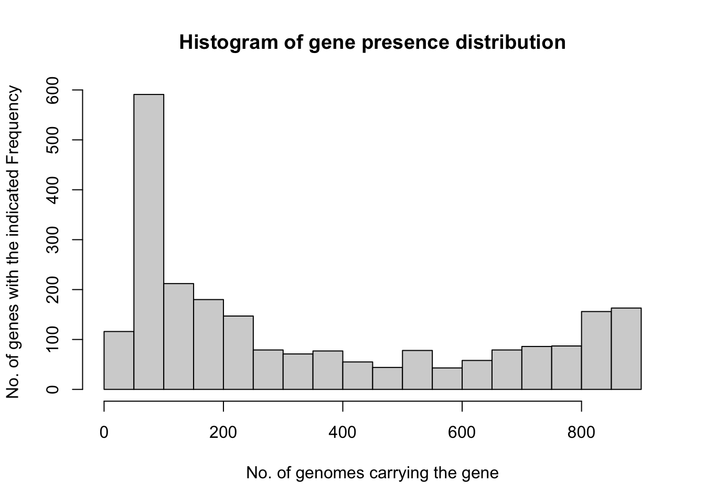
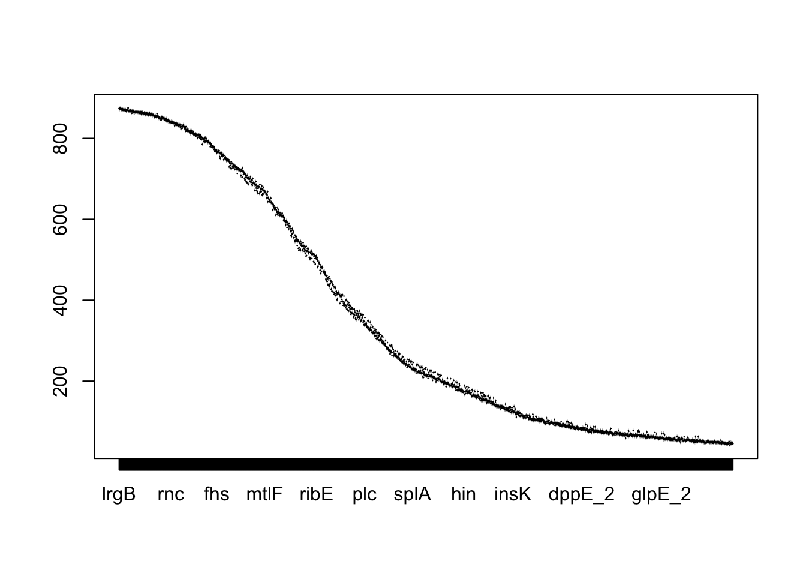

This is a companion repo & webpage for the Microbial Genomics and ML workshop, first presented at the MLHD 2023 conference! You can access the material here: https://jananiravi.github.io/2023-mlhd
Overview
This session will cover ideas, concepts, and insights needed to get started with building machine learning models with high-dimensional data, such as microbial genomics. No prior knowledge in ML is required.
Acknowledgments
JRaviLab: Jacob Krol, Ethan Wolfe, Evan Brenner, Keenan Manpearl, Joseph Burke, Vignesh Sridhar, Jill Bilodeaux
Arjun Krishnan
R-Ladies, esp. R-Ladies East Lansing, R-Ladies Aurora
tidymodels resource by Julia Silge et al., | tidymodels.org
Install and load packages
To use the code in this document, you will need to install the following packages: glmnet, tidyverse, and tidymodels.
library(tidyverse)
── Attaching core tidyverse packages ──────────────────────── tidyverse 2.0.0 ──
✔ dplyr 1.1.2 ✔ readr 2.1.4
✔ forcats 1.0.0 ✔ stringr 1.5.0
✔ ggplot2 3.4.2 ✔ tibble 3.2.1
✔ lubridate 1.9.2 ✔ tidyr 1.3.0
✔ purrr 1.0.1
── Conflicts ────────────────────────────────────────── tidyverse_conflicts() ──
✖ dplyr::filter() masks stats::filter()
✖ dplyr::lag() masks stats::lag()
ℹ Use the conflicted package (<http://conflicted.r-lib.org/>) to force all conflicts to become errors
Loading required package: Matrix
Attaching package: 'Matrix'
The following objects are masked from 'package:tidyr':
expand, pack, unpack
Loaded glmnet 4.1-7
Explore your data
Here, we will use microbial genomics data (e.g., gene presence/absence across multiple microbial genomes) wrangled and processed from the BV-BRC to predict the antibiotic resistance phenotype of each sample (genome) based on the presence/absence of genes in that sample.
To make the dataset usable on your local desktop machine, we have pre-processed the data (using custom scripts that use NCBI/BV-BRC data and metadata, NCBI and BV-BRC CLI, Prokka for genome annotation, and Roary/CD-HIT for constructing ht gene presence/absence matrix and gene clusters that serve as ML features). For this workshop, we have selected a subset of ~900 genomes from Staphylococcus aureus, and limited the data to n genes after filtering out core (present in >95% of genomes) and unique (present in <5% of genomes) genes.
The data is contained in the files abc.csv with samples (genomes) along the rows and genes along the columns. To get started, let’s read this data into R using the readr::read_delim function. These files also carry relevant metadata of the genomes and drugs.
Read in the data file
# Can be set to read csv/tsv: any feature matrix file with metadata# e.g., gpa-feature-matrix.tsvexp_featmat <-read_delim("data/staph_penicillin_pangenome.csv",delim =",", col_names = T)
Rows: 920 Columns: 2328
── Column specification ────────────────────────────────────────────────────────
Delimiter: ","
chr (4): antibiotic, amr_pheno, drug_class, assembly_accession
dbl (2324): s_no, genome_id, prmA, hisC_1, araB, yqeN, tagH_2, tet(38), lrgB...
ℹ Use `spec()` to retrieve the full column specification for this data.
ℹ Specify the column types or set `show_col_types = FALSE` to quiet this message.
Then, let’s examine the amr_pheno column of this data frame that tells us which antimicrobial resistance (AMR) phenotype (resistance/susceptible) for each sample (i.e., each row, genome) for different drugs. We can tabulate the number and fraction of genomes per phenotype easily using the count and mutate functions from dplyr.
# A tibble: 2 × 3
amr_pheno n prop
<chr> <int> <dbl>
1 Resistant 481 0.523
2 Susceptible 439 0.477
Before we proceed, let’s also try and get a sense of the values in this feature matrix. Since there are thousands of genes, we’ll randomly pick a few of them and visualize the distribution of their values across all the samples using boxplots.
exp_sub <- exp_featmat |>select(7:last_col()) |>summarize(across(where(is.numeric), sum))hist(as.numeric(exp_sub),xlab ="No. of genomes carrying the gene",ylab ="No. of genes with the indicated Frequency",main ="Histogram of gene presence distribution")

boxplot(exp_sub[,7:ncol(exp_sub)])

Feature matrices –> ML
Given there are genomes with R/S from multiple drugs, to make the problem simpler, let’s pick one drug of interest and define the problem as classifying whether a genome is resistant or not to this antibiotic.
pos_pheno <-"Resistant"
Then, we need to modify the amr_pheno variable into a binary indicator of whether it is resistant or not and finally convert that variable into a factor so that the model knows to consider it as a way to partition the samples.
Set up the feature matrix and labels for the ML model
A critical quantity to be fully aware of when setting up an ML problem is class balance, i.e., the relative sizes of the positive ("Resistant") and negative ("Susceptible") classes.
# A tibble: 2 × 3
amr_pheno n prop
<fct> <int> <dbl>
1 Resistant 481 0.523
2 Susceptible 439 0.477
We can see that, in our dataset, only xx% of the samples are “Resistant”. Referred to as class imbalance, this scenario is extremely common in biomedicine and needs careful attention when analyzing and interpreting results.
Data splitting
If we take the data from all samples and train an AMR classification ML model, we cannot easily tell how good the model is. So, let’s reserve 25% of the samples to a test set, which we will hold out until the end of the project, at which point there should only be one or two models under serious consideration. The test set will be used as an unbiased source for measuring final model performance.
This is also the first step where we need to pay attention to class imbalance. As the amr_pheno variable is highly imbalanced, we need to use stratified random samples so that both the splits contain nearly identical proportions of positive and negative samples.
# The function `initial_split()` takes the original data and saves the information on how to make the partitions.set.seed(123)splits <-initial_split(exp_featmat_pheno, strata = amr_pheno)# The `training()` and `testing()` functions return the actual datasets.exp_other <-training(splits)exp_test <-testing(splits)
Let’s check if we indeed did achieve stratified data splits.
# other set proportions by AMR phenoexp_other %>%count(amr_pheno) %>%mutate(prop = n/sum(n))
# A tibble: 2 × 3
amr_pheno n prop
<fct> <int> <dbl>
1 Resistant 360 0.522
2 Susceptible 329 0.478
# test set proportions by R/S ratioexp_test %>%count(amr_pheno) %>%mutate(prop = n/sum(n))
# A tibble: 2 × 3
amr_pheno n prop
<fct> <int> <dbl>
1 Resistant 121 0.524
2 Susceptible 110 0.476
What’s up with the exp_other split that’s not testing? This split will be used to create two new datasets:
The set held out for the purpose of measuring performance, called the validation set, and
The remaining data used to fit the model, called the training set.
We’ll use the validation_split function to allocate 20% of the exp_other samples to the validation set and the remaining 80% to the training set. Note that this function too has the strata argument. Do you see why we need it here?
# Validation Set Split (0.8/0.2) using stratification
# A tibble: 1 × 2
splits id
<list> <chr>
1 <split [551/138]> validation
Training my first ML model: Penalized logistic regression
Since our outcome variable AMR_pheno is categorical, logistic regression would be a good first model to start. Let’s use a model that can perform feature selection during training. The glmnet R package fits a generalized linear model via penalized maximum likelihood. This method of estimating the logistic regression slope parameters uses a penalty on the process so that the coefficients of less relevant predictors are driven towards a value of zero. One of the glmnet penalization methods, called the lasso method, can actually set the predictor slopes to zero if a large enough penalty is used.
Build the model
To specify a penalized logistic regression model that uses a feature selection penalty, we will use parsnip package (part of tidymodels) that is great at providing a tidy, unified interface to models that can be used to try a range of models without getting bogged down in the syntactical minutiae of the underlying packages.
lr_mod <-logistic_reg(penalty =tune(), mixture =1) %>%set_engine("glmnet") # set to generalized linear models
We’ll set the penalty argument to tune() as a placeholder for now. This is a model hyperparameter that we will tune to find the best value for making predictions with our data. Setting mixture to a value of one means that the glmnet model will potentially remove irrelevant predictors and choose a simpler model.
Create the recipe
Next, we’re going to use the recipes to build dplyr-like pipeable sequences of feature engineering steps to get our data ready for modeling. Recipes are built as a series of pre-processing steps, such as:
converting qualitative predictors to indicator variables (also known as dummy variables),
transforming data to be on a different scale (e.g., taking the logarithm of a variable),
transforming whole groups of predictors together,
extracting key features from raw variables (e.g., getting the day of the week out of a date variable),
and so on. Here, we’re using it to set up the outcome variable as a function of gene presence and then do two things:
step_zv() removes indicator variables that only contain a single unique value (e.g. all zeros). This is important because, for penalized models, the predictors should be centered and scaled.
step_normalize() centers and scales numeric variables.
lr_recipe <-recipe(amr_pheno ~ ., data = exp_other) %>%# specify data + labelsupdate_role(c(s_no, genome_id, antibiotic, drug_class, assembly_accession),new_role ="Supplementary") %>%# tag metadata not used for MLstep_zv(all_predictors()) %>%# remove predictors with only one valuestep_normalize(all_predictors()) # normalize all predictors
Create the workflow
Let’s bundle the model and recipe into a single workflow() object to make management of the R objects easier:
The tune::tune_grid() function will help us train these 10 penalized logistic regression models and save the validation set prediction (via the call to control_grid()) so that diagnostic information will be available after fitting the model. To quantify how well the model performs (on the validation set), let’s first consider the area under the ROC curve across a range of prediction score thresholds.
A plot of the area under the ROC curve against the range of penalty values will help us guess which value is best for the problem/dataset at hand.
lr_plot <- lr_res %>%collect_metrics() %>%ggplot(aes(x = penalty, y = mean)) +geom_point() +geom_line() +ylab("Area under the ROC Curve") +#ylab("Area under the PR Curve") +scale_x_log10(labels = scales::label_number()) +theme_bw()lr_plot
What is your interpretation of this plot? Write it here.
We can also tabulate these results to help pick the “best” hyperparameter.
top_models <- lr_res %>%show_best("roc_auc", n =10) %>%arrange(penalty) top_models
# A tibble: 10 × 7
penalty .metric .estimator mean n std_err .config
<dbl> <chr> <chr> <dbl> <int> <dbl> <chr>
1 0.0001 roc_auc binary 0.996 1 NA Preprocessor1_Model01
2 0.000215 roc_auc binary 0.996 1 NA Preprocessor1_Model02
3 0.000464 roc_auc binary 0.996 1 NA Preprocessor1_Model03
4 0.001 roc_auc binary 0.996 1 NA Preprocessor1_Model04
5 0.00215 roc_auc binary 0.996 1 NA Preprocessor1_Model05
6 0.00464 roc_auc binary 0.997 1 NA Preprocessor1_Model06
7 0.01 roc_auc binary 0.997 1 NA Preprocessor1_Model07
8 0.0215 roc_auc binary 0.996 1 NA Preprocessor1_Model08
9 0.0464 roc_auc binary 0.996 1 NA Preprocessor1_Model09
10 0.1 roc_auc binary 0.979 1 NA Preprocessor1_Model10
Let’s select the best value and visualize the validation set ROC curve. Why are we picking the 6th value instead of the 1st even though they have nearly identical performance metrics?
The area under the ROC curve has a nice property that it can be interpreted as a probability and has a close connection to a statistical test (the Mann-Whitney U test).
When you have imbalanced classes
However, this measure is not sensitive to class imbalances and can come out to be high even if the model is making many mistakes in the minor positive class — which is typically of biomedical interest — and getting most of the major negative class correct.
So, the final analysis we’re going to do is to evaluate performance based on another metric called area under the Precision-Recall curve that is more sensitive to the minor positive class by focusing on the fraction of top positive predictions that are correct (precision) and the fraction of positive samples that are correctly predicted (recall).